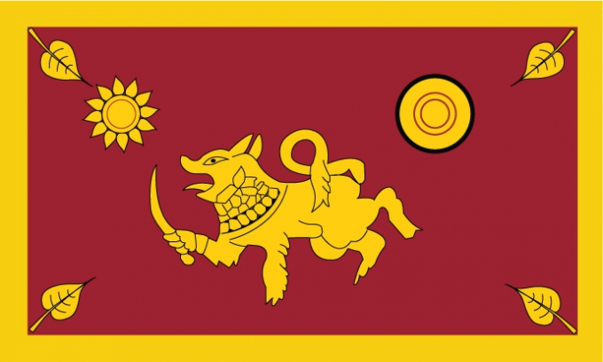
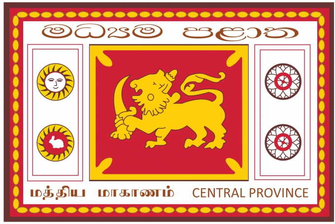
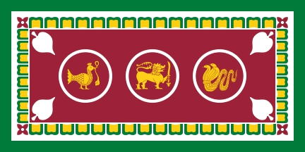
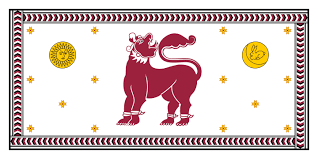
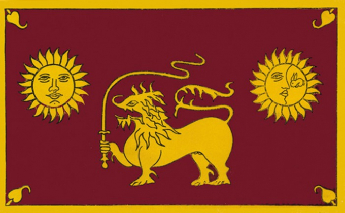
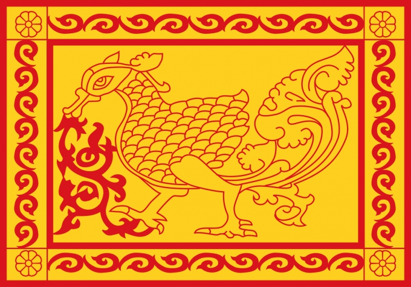
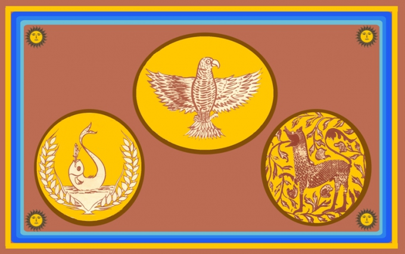
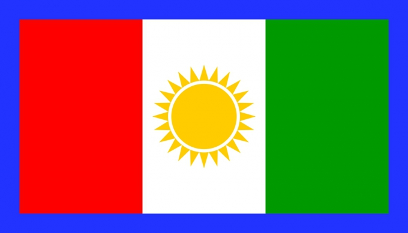
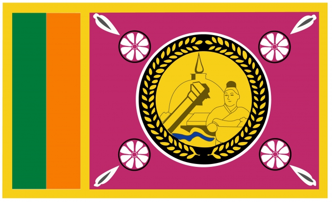

Southern Province
The Southern Province of Sri Lanka is a small geographic area consisting of three districts: Galle, Matara and Hambantota. Farming and fishing are the main sources of income for the vast majority of the people in this region. Important landmarks of the Southern Province include the wildlife sanctuaries; Yala, Lunugamvehera and Bundala National Parks. Districts under Southern Province (1) Galle (2) Hambantota (3) Matara ">
The Southern Province of Sri Lanka is a small geographic area consisting of three districts: Galle, Matara and Hambantota. Farming and fishing are the main sources of income for the vast majority of the people in this region. Important landmarks of the Southern Province include the wildlife sanctuaries; Yala, Lunugamvehera and Bundala National Parks. Districts under Southern Province (1) Galle (2) Hambantota (3) Matara ">
Central Province
The Central Province is located in the central hills of Sri Lanka comprising of three administrative districts: Kandy, Matale and Nuwara-Eliya. The land area of the province is 5,575 km2 which is 8.6% of the total land area of Sri Lanka. The province lies on 6.6°- 7.7° northern latitudes and between 80.5°-80.9° eastern longitudes. The elevation in the province ranges from 600 ft to over 6000 ft above the sea level. Districts under Central Province (1) Kandy (2) Matale(3) Nuwara Eliya">
The Central Province is located in the central hills of Sri Lanka comprising of three administrative districts: Kandy, Matale and Nuwara-Eliya. The land area of the province is 5,575 km2 which is 8.6% of the total land area of Sri Lanka. The province lies on 6.6°- 7.7° northern latitudes and between 80.5°-80.9° eastern longitudes. The elevation in the province ranges from 600 ft to over 6000 ft above the sea level. Districts under Central Province (1) Kandy (2) Matale(3) Nuwara Eliya">
Western Province
The most densely populated province of Sri Lanka, the Western Province which is 3,593 km2 in extent is home to the country’s legislative capital Sri Jayewardenepura. It is also home to the country’s commercial hub, Colombo. Districts under Western Province (1) Colombo (2) Gampaha (3) Kalutara">
The most densely populated province of Sri Lanka, the Western Province which is 3,593 km2 in extent is home to the country’s legislative capital Sri Jayewardenepura. It is also home to the country’s commercial hub, Colombo. Districts under Western Province (1) Colombo (2) Gampaha (3) Kalutara">
North Western Province
North Western Province is comprised of two administrative districts viz. Kurunegala and Puttalam. The provincial capital is Kurunegala that has a population of 28,571. The province is well known for its coconut plantations. Other main towns in this province are Chilaw (24,712) and Puttalam (45,661), both of which are small fishing towns. The majority of the population in the province is Sinhalese. Districts underNorth Western Province (1)Kurunegala (2) Puttalam">
North Western Province is comprised of two administrative districts viz. Kurunegala and Puttalam. The provincial capital is Kurunegala that has a population of 28,571. The province is well known for its coconut plantations. Other main towns in this province are Chilaw (24,712) and Puttalam (45,661), both of which are small fishing towns. The majority of the population in the province is Sinhalese. Districts underNorth Western Province (1)Kurunegala (2) Puttalam">
Sabaragamuwa Province
Sabaragamuwa is yet another province of Sri Lanka, located in the south-central region of the island and is comprised of two administrative districts: Ratnapura and Kegalle. Sabaragamuwa is named after its former indigenous inhabitants, namely the Sabara, an Indic term for hunter gatherer tribes, a term seldom used in ancient Sri Lanka. The province is well known for its gem industry, particularly the Ratnapura District. Districts under Sabaragamuwa Province (1) Kegalle (2) Ratnapura">
Sabaragamuwa is yet another province of Sri Lanka, located in the south-central region of the island and is comprised of two administrative districts: Ratnapura and Kegalle. Sabaragamuwa is named after its former indigenous inhabitants, namely the Sabara, an Indic term for hunter gatherer tribes, a term seldom used in ancient Sri Lanka. The province is well known for its gem industry, particularly the Ratnapura District. Districts under Sabaragamuwa Province (1) Kegalle (2) Ratnapura">
Uva Province
The Uva Province consists of two districts: Badulla and Moneragala while the capital of the province is Badulla. Uva is bordered by the Eastern, Southern and Central provinces. Uva’s symbolic mountain is Namunukula which stands tallest of the mountain range surrounding the Badulla town. Districts under Uva Province (1) Badulla (2) Moneragala">
The Uva Province consists of two districts: Badulla and Moneragala while the capital of the province is Badulla. Uva is bordered by the Eastern, Southern and Central provinces. Uva’s symbolic mountain is Namunukula which stands tallest of the mountain range surrounding the Badulla town. Districts under Uva Province (1) Badulla (2) Moneragala">
Eastern Province
Another province of Sri Lanka mostly known for its golden beaches and the natural harbour, the Eastern Province which is 9,996 km2 in extent consists of three administrative districts namely Trincomalee, Batticaloa and Ampara. Between 1988 and 2006 the province was temporarily merged with the Northern Province to form the North-East Province. Districts under Eastern Province (1) Ampara (2) Batticaloa (3) Trincomalee">
Another province of Sri Lanka mostly known for its golden beaches and the natural harbour, the Eastern Province which is 9,996 km2 in extent consists of three administrative districts namely Trincomalee, Batticaloa and Ampara. Between 1988 and 2006 the province was temporarily merged with the Northern Province to form the North-East Province. Districts under Eastern Province (1) Ampara (2) Batticaloa (3) Trincomalee">
Nothern Province
The Northern Province is located in the north of Sri Lanka just 35 km from India. It has a land area of 8,884 km’. The province is surrounded by the Gulf of Mannar and Palk Bay to the west, Palk Strait to the north west, the Bay of Bengal to the north and east and the Eastern, North Central and North Western provinces to the south. Districts under Nothern Province (1) Jaffna (2) Kilinochchi (3) Mannar (4) Mullaitivu (5) Vavuniya">
The Northern Province is located in the north of Sri Lanka just 35 km from India. It has a land area of 8,884 km’. The province is surrounded by the Gulf of Mannar and Palk Bay to the west, Palk Strait to the north west, the Bay of Bengal to the north and east and the Eastern, North Central and North Western provinces to the south. Districts under Nothern Province (1) Jaffna (2) Kilinochchi (3) Mannar (4) Mullaitivu (5) Vavuniya">
North Central Province
The largest province of Sri Lanka, located in the dry zone being 10,714 km2 in extent, the North Central Province that consists of two administrative districts viz. Anuradhapura and Polonnaruwa, is known for its centuries-old irrigated agriculture, ancient Sinhalese kingdoms and places of Buddhist worship such as Sri Maha Bodhi, Ruwanweliseya. Districts under North Central Province (1) Anuradhapura (2) Polonnaruwa">
The largest province of Sri Lanka, located in the dry zone being 10,714 km2 in extent, the North Central Province that consists of two administrative districts viz. Anuradhapura and Polonnaruwa, is known for its centuries-old irrigated agriculture, ancient Sinhalese kingdoms and places of Buddhist worship such as Sri Maha Bodhi, Ruwanweliseya. Districts under North Central Province (1) Anuradhapura (2) Polonnaruwa">
×